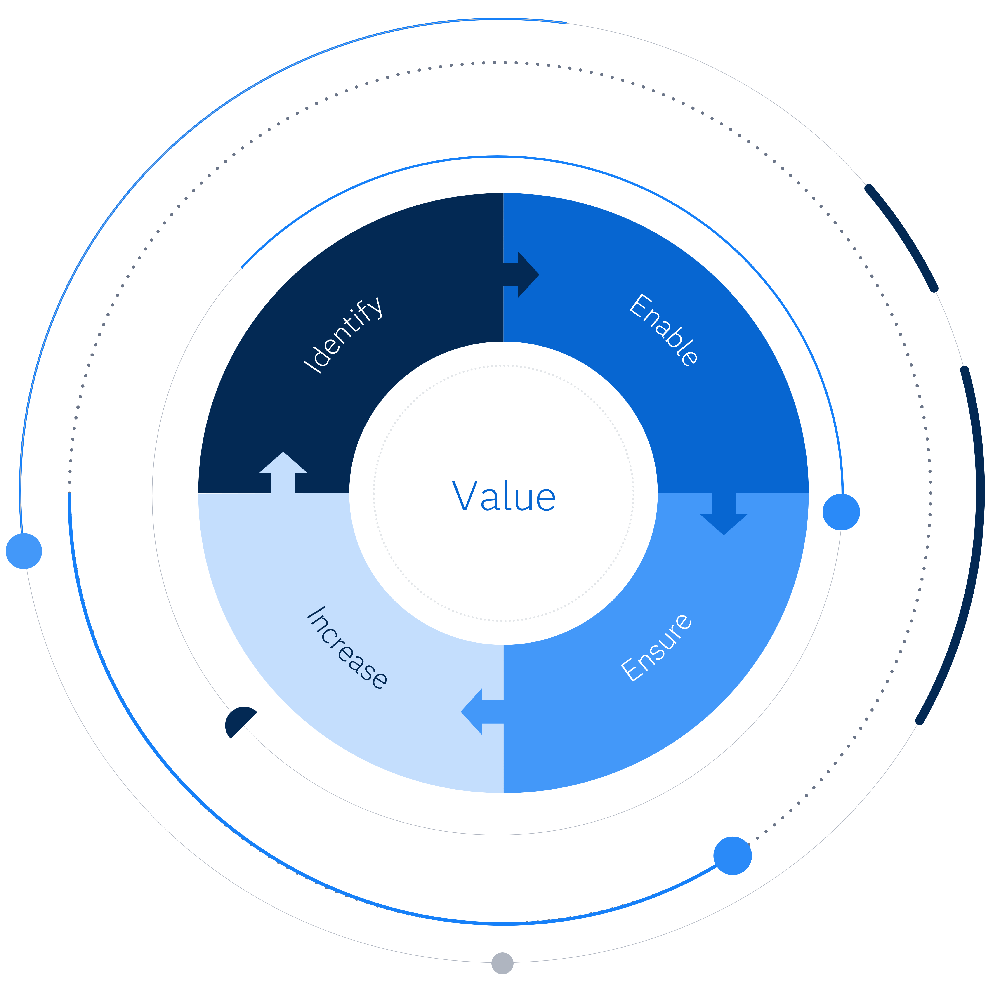

SAS Viya Forge is a community driven repository for documents and tools that help architect, implement and operate your Viya environments.
Each piece of content is aimed at ensuring your Viya environment delivers maximum value in the shortest possible time.
Find ContentReference Architectures document the most optimal architecture to support one or more non-functional requirements.
Best Practices document the widely accepted sequence of tasks that provide the most effective way to achieve a desired outcome.
Guides document a sequence of Best Practices that together achieve a desired outcome.
Pathways provide a combination of Reference Architectures, Best Practices and Guides to progress through a system lifecycle.
Viya Forge provides useful Tools for testing and tuning your Viya environments, ensuring it provides maximum value.